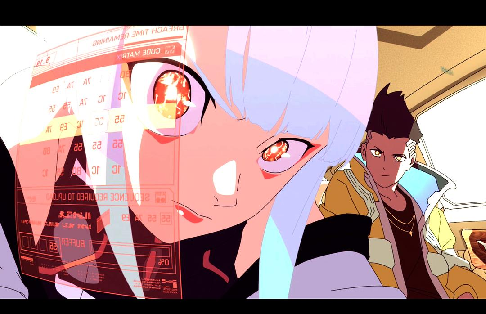

9999年9月9日 · 10086次浏览 赛博朋克：边缘行者 该剧集是一部独立的 10 集剧集，故事讲述了一名街头流浪儿在一个科技和形体改造泛滥的夜之城中挣扎求生，一无所有的他成为一名“边缘行者“（亦被称为“赛博浪客”的法外佣兵）来维持生计。
 9999年9月9日 · 10086次浏览 Lucy我的Lucy😭😭 该剧集是一部独立的 10 集剧集，故事讲述了一名街头流浪儿在一个科技和形体改造泛滥的夜之城中挣扎求生，一无所有的他成为一名“边缘行者“（亦被称为“赛博浪客”的法外佣兵）来维持生计。